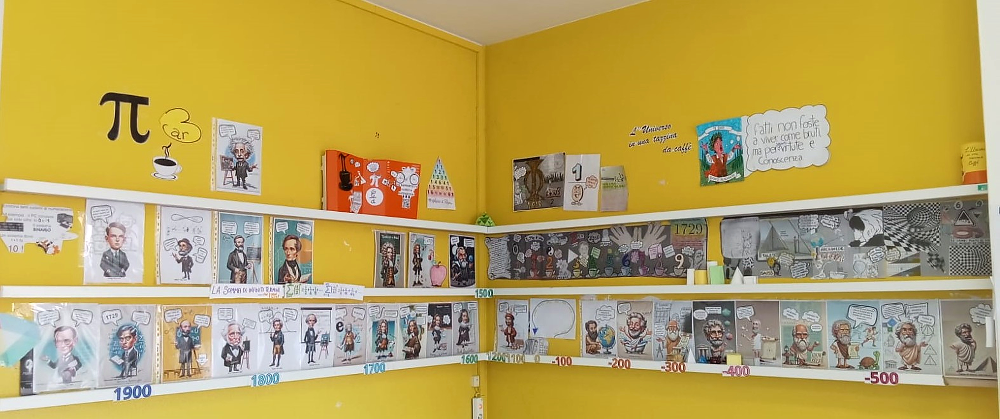

Entra nell’angolo della classe e incontra le idee dietro i volti.
Seleziona un personaggio e clicca sul suo ritratto nella foto. Per rendere le modifiche visibili a tutti, carica su GitHub il file contenuti.json scaricato, sostituendo quello precedente.

Seleziona un punto luminoso, oppure esplora le schede qui sotto ↓
Esplora i personaggi
I punti sulla fotografia aiutano a orientarsi. Le tavole originali si aprono nitide nelle schede. Le nuove aggiunte sono nella galleria.
Il vuoto generativo
Tra alcune figure di questa parete resta un grande spazio. «Davvero qui non accadde nulla?»